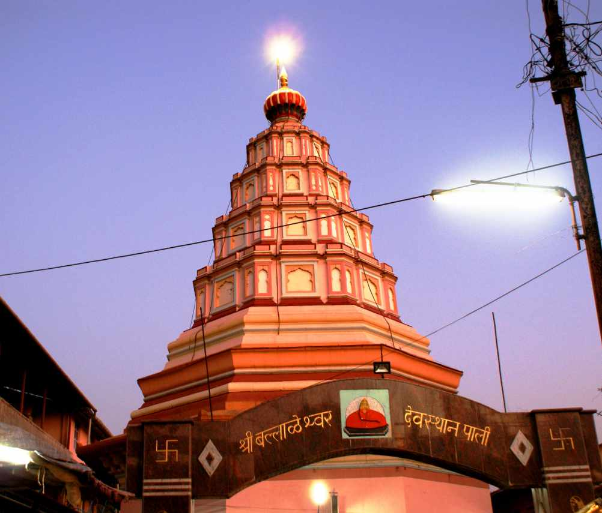

.jpg)

Ballaleshwar Pali is one of the eight temples of the Hindu God Ganesha.[1] Among Ganesha temples, Ballaleshwar is the only one dedicated to Ganesha that is known by his devotee's name. It is located in the village of Pali which is 28 km from Roha in the Raigad district of Maharashtra, India. It is situated between fort Sarasgad and the river Amba. The temple Moreshvar Vitthal Sindkar constructed the temple in 1640. He was one of the major contributor of the work of Chatrapati Shivaji. The Ganesha devotee and had immense contribution to the development of the temple. The original wooden temple was renovated in 1760 to make way for a new stone temple designed by Shri Fadnis. Built in the shape of the letter Shri, it was made by mixing lead with the cement during construction. The east-facing temple was carefully positioned so that, as the sun rises, sun rays fall directly on the murti during worship. The temple contains a bell that was brought back by Chimaji Appa after his defeat of the Portuguese in Vasai and Sasti. The temple complex encircles two lakes and is tiled throughout. There are two sanctums in the temple, an inner and an outer sanctum. The inner sanctum is 15 feet (4.6 m) high, while the outer sanctum is only 12 feet (3.7 m) high. The outer sanctum contains a murti in the shape of a rat, holding modak in its hands while facing Ganesha. The main hall of the temple is 40 feet (12 m) long and 20 feet (6.1 m) wide and contains eight pillars resembling cypress trees. [2]
How to reach Pali Ganapati temple? Here’s how to reach Pali Ganapati Temple: Road – Pali enjoys good roads and several busesoperate from Mumbai, Thane, and Pune. The RedBusoperates a bus from Mumbai to Ballaleshwar Paliin every 15 minutes. Devotees can get the Ticketsat a minimal cost of ₹550 – ₹750 and the journey takes 3h. Rail – Nearest railway stations are in Khopoliand Karjat.